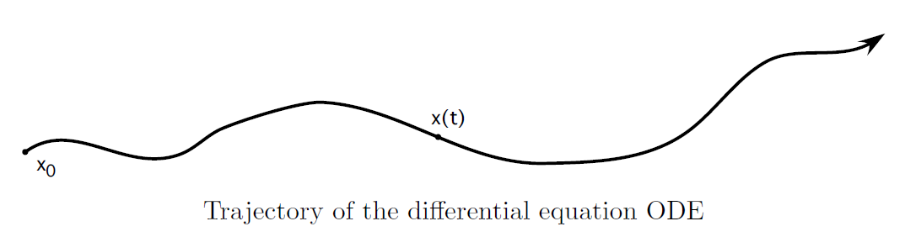
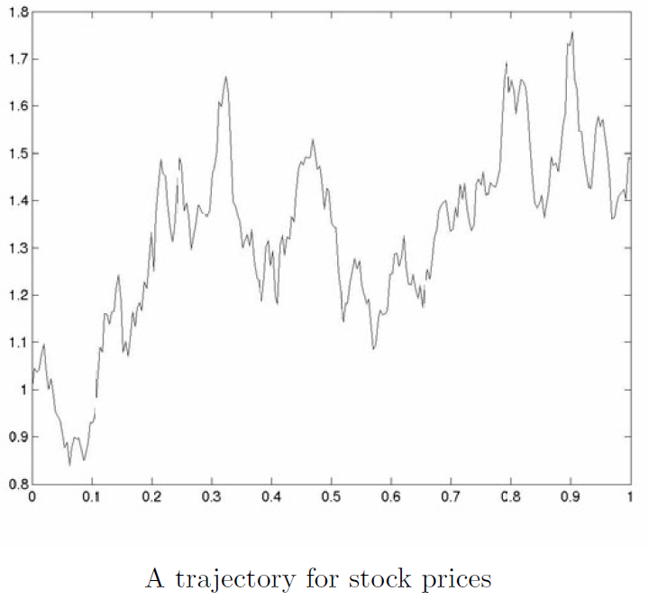
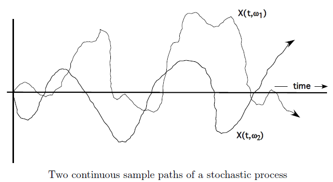

An Introduction to Stochastic Differential Equations
Part of note of An Introduction to Stochastic Differential Equations, Lawrence C. Evans
本页面还在施工中
Introduction
Deterministic and Random Differential Equations
关注系统状态 \(\bm x\) 关于时间 \(t\) 变化的 ODE:
向量场 (vector field)
给定 \(S\subseteq \mathbb{R}^n\), 则标准笛卡尔坐标 \((x_1,\cdots,x_n)\) 下的 \(V: S\to \mathbb{R}^n\) 被称为向量场。
若 \(V\) 的每个分量都连续，则称为连续向量场。同理有光滑向量场。
光滑 (smooth)
考虑可微函数类 \(C^k\)，即 \(f\in C^k\) 等价于 \(f', f'', f^{(k)}\) 都存在且连续。
\(f\) 光滑即指 \(f\in C^{\infty}\)，即无限阶可微。
\(\bm b: \mathbb{R}^n \to \mathbb{R}^n\) 为光滑向量场。将能够确定轨迹 (trajectory) \(\bm x: [0, \infty)\to \mathbb{R}^n\)。

然而实践中，由于随机扰动 (random perturbations) 的存在，往往不精准地位于轨迹上。考虑随机扰动之后，就可以得到
其中 \(\bm B: \mathbb{R}^n \to \mathbb{R}^{n\times m}\)，映射到一个 \(n\times m\) 矩阵。针对这个方程组有问题：
- 定义 \(\xi(\cdot)\) (\(m\) 维“白噪声”)
- 定义解得的 \(X(\cdot)\) 的意义
- 讨论解的存在性，唯一性，渐进 (asymptotic) 行为
Stochastic Differentials
若令 \(m=n, \bm X_0=0, \bm b\equiv 0, \bm B \equiv I\)，那么此时的 \(\bm X\) 具有了布朗运动 (Bronwian motion) 或者说维恩过程 (Wiener process) 的意义，重写为 \(\bm W(\cdot)\)，有
所以，“白噪声” 实际上是布朗运动关于时间的导数。将“白噪声”这样替换，就可以得到
这就是随机微分方程 (stochastic differential equations, SDE)。其中，\(\mathrm{d}\bm W\) 或者 \(\bm B\mathrm{d}\bm W\) 被称为随机微分 (stochastic differential)。解写作
为了使这个形式的解有意义（良定义
- 构造布朗运动 \(\bm W(\cdot)\)：Chap3
- 定义随机积分 (stochastic integral) \(\int_0^t\cdots \mathrm{d}\bm W\)：Chap4
- 解的存在性：Chap5
对于这个解的实际意义，存在以下问题
- SDE 是否真的在建模物理问题？
- “白噪声” \(\bm \xi\) 是否真的是白噪声，还是只是一系列光滑高震荡函数的组合？：Chap6
Itô's Chain Rule
在 SDE 中，链式法则并不是 trivial 的。为了便于理解，以 \(n=m=1\) 的简单情况为例介绍
给定 \(Y(t)=u(X(t))\), \(u: \mathbb{R}\to\mathbb{R}\) 是一个给定的光滑函数。按照 trivial 的链式法则，你或许会认为
注意上面的式子是错的
上面的式子错误，主要来自于一个非常规 (irregular) “事实”：布朗运动的微分近似于根号的时间微分
常规链式法则
常规链式法则实际上来自泰勒展开后省略高阶小量。即
由于 \(X\) 关于 \(t\) 再展开至少也是一阶，所以可以直接在 \(X\) 的层面消除高阶小量。
然而此时泰勒展开后有
高阶项可以略去。这种奇怪的链式法则就是 Itô's Chain Rule 的一个实例化。
Example1
使用 Itô's Chain Rule 可以解得
而不是普通的
Example2
设 \(S(t)\) 为 \(t\) 时刻股价 (price of stock)，一个标准模型认为 \(\frac{\mathrm{d}S}{S}\) 对特定的 \(\mu>0\) 和 \(\sigma\) 满足
所以有 SDE
使用 Itô's Chain Rule 可以解得

A Crash Course in Probability Theory
Basic Definitions
Probability Space
Bertrand's paradox 说明
概率空间 (probability space)
若 Triple \((\Omega,\mathcal{U},P)\)
满足
- \(\Omega\neq\emptyset\)
- \(\mathcal{U}\) 是关于 \(\Omega\) 子集的 \(\sigma\)-algebra
- \(P\) 是 \(\mathcal{U}\) 上的概率测度
则 \((\Omega,\mathcal{U},P)\) 被称为概率空间。
\(\sigma\)-algebra \(\;\mathcal{U}\;\) 可以理解为合法事件集，正式定义为
\(\sigma\)-algebra
\(\sigma\)-algebra \(\;\mathcal{U}\subseteq 2^{\Omega}\;\) 需满足以下性质 :
- \(\emptyset, \;\Omega\in \mathcal{U}\)
- If \(A\in \mathcal{U}\), then \(A^c\in \mathcal{U}\).
- If \(A_1, A_2, \cdots \in \mathcal{U}\), then
这里 \(A^{c}:=\Omega-A\)，为补集的含义。
一种更简单的定义方式为，\(\sigma\)-algebra \(\;\mathcal{U}\;\) 即为 \(\Omega\) 的子集族，其中 \(\Omega\in \mathcal{U}\)，且 \(\mathcal{U}\) 在补、可数交、可数并操作下封闭。
概率测度 \(P\) 是一个从 \(\mathcal{U}\) 到 \([0, 1]\) 的映射，可以给出任何合法事件的一个“概率”，正式定义为
概率测度 (probability measure)
令 \(\mathcal{U}\) 为关于 \(\Omega\) 子集的 \(\;\sigma\)-algebra，则称
为概率测度 (probability measure)，若满足 :
(1) \(P(\emptyset)=0,\;P(\Omega)=1.\)
(2) 若 \(A_1,A_2,\ldots\in\mathcal{U}\)，则
(3) (2) 式在 \(A_1,A_2,\ldots\in \mathcal{U}\) 是不相交的集合时取等。
一个简单的导出结论是若 \(A,B\in\mathcal{U}\)，则
由此产生了一些术语 (terminology)：
- 集合 \(A\in\mathcal{U}\) 被称为事件 (event)，点 \(\omega\in\Omega\) 被称为样本点 (sample points)
- \(P(A)\) 是事件 \(A\) 的概率 (probability)
- \(P(A^c)=0\)，则认为 \(A\) 几乎必然 (almost surely, a.s.)
先举两个相对比较简单的例子：
Examples
- 有限点集的测度：为每个点分配对应的概率，所有点的概率和为 1。一个集合（该有限点集的子集）的概率，即其中所有样本点概率的和。
- Buffon's needle problem: 平面由无限多平行线分割，相邻平行线之间相隔 2cm。一根长度为 1cm 的针随机抛掷，求针与平行线相交的概率。问题分析中，构建概率空间、需要分析的随机变量，最后进行求解。
接下来的例子会有一些困难，因为即将引入一些后面依然会用到的概念。
Borel \(\sigma\)-algebra
Borel \(\sigma\)-algebra 表示拓扑空间上最小的包含所有开集的 \(\:\sigma\)-algebra。
在拓扑空间中，任何一个可以通过开集之间的补、可数交、可数并获得的集合，都是 Borel set。Borel \(\sigma\)-algebra 事实上就是拓扑空间上所有 Borel set 的集合。
Examples
- 使用 \(\mathcal{B}\) 表示 \(\mathbb{R}^n\) 上的 Borel \(\;\sigma\)-algebra。设 \(f:\mathbb{R}^n\to \mathbb{R}\) 是一个满足 \(\int_{\mathbb{R}^n} f\mathrm{d}x=1\) 的非负可积函数，则定义关于 \(\mathcal{B}\) 的概率测度
这样 \((\mathbb{R}^n, \mathcal{B}, P)\) 就构成了一个概率空间。我们称 \(f\) 为关于概率测度 \(P\) 的概率密度函数。
- 同样在 \(\mathbb{R}^n\) 和 \(\mathcal{B}\) 下，对于定点 \(x_0\in \mathbb{R}^n\) 可以定义新的测度：Dirac measure，或 Dirac point mass
\(n=1\) 时，\(\mathcal{B}\) 实际上就是实数轴上的所有区间（开、闭、半开半闭
） 。
Random Variables
随机变量 (random variable)
在概率空间 \((\Omega,\mathcal{U},P)\) 下，\(\mathcal{U}\)- 可测函数
被称为 \(n\) 维随机变量。
可测 (measurable)
测度论中，一个集合 \(A\) 可测指的是 \(A\in\mathcal{U}\)。
随后定义可测函数：在测度空间 \((\Omega,\mathcal{U},P)\) 下，考虑 \(\bm X: \Omega\to \mathbb{R}^n\)，若 \(\:\forall B\in\mathcal{B}\),
那么就称 \(\bm X\) 为 \(\:\mathcal{U}\)- 可测 (\(\,\mathcal{U}\)-measurable)。即对 \(\mathbb{R}\) 上任意开集 \(B\) 的逆像可测。
remark
- 这里的随机变量 (random variable) 包括中文语境中的一元随机变量和多元随机向量
- \(P(\bm X^{-1}(B))\) 往往写作
赋与开集在 \(\bm X\) 的逆像的概率测度以意义：\(\bm X\) 取值落在这个开集中的概率。
在这里给出指示函数 (indicator function) 和简单函数 (simple function) 两个随机变量的例子，这两个例子将在后面不带说明地出现。
Examples
对于集合 \(A\in\mathcal{U}\)，定义指示函数 \(\bm 1_A\) 为
则指示函数可见就是一个随机变量。更一般地，对于 \(A_1,A_2,\cdots,A_n\in\mathcal{U}\)，且 \(\Omega=\bigcup_{k=1}^n A_k\)，定义简单函数 \(\bm X\) 为
其中 \(a_k\in\mathbb{R}\)，简单函数也是一个随机变量。
简单函数就是多个指示函数的线性组合。
通过随机变量 \(\bm X\) 可以生成 \(\:\sigma\)-algebra \(\mathcal{U}(\bm X)\)，它“包含了所有 \(\bm X\) 的相关信息”。
生成 \(\:\sigma\)-algebra
由 \(\bm X\) 生成的 \(\:\sigma\)-algebra \(\:\mathcal{U}(\bm X)\) 定义为
如果随机变量 \(\bm Y\) 是 \(\bm X\) 的函数，即 \(\bm Y = \phi (\bm X)\)，那就意味着 \(\bm Y\) 是 \(\:\mathcal{U}(\bm X)\)- 可测的。
反之，如果 \(\bm Y\) 是 \(\:\mathcal{U}(\bm X)\)- 可测的，那么将会存在函数 \(\phi\) 使得 \(\bm Y = \phi(\bm X)\)，即如果确定 \(X(\omega)\) 的值，那么 \(\bm Y\) 的值也将被确定，尽管我们不一定能实际构造出这个 \(\phi\)。
Stochastic Processes
随机过程 (stochastic process) 与采样路径 (sample path)
- 随机变量集合 \(\{\bm X(t) \;|\; t\geqslant 0\}\) 被称为随机过程 (stochastic process)
- 给定样本点 \(\:\omega\in \Omega\), 映射 \(t\to \bm X(\omega, t)\) 被称为采样路径 (sample path)

Expected Value, Variance
Integration with respect to a Measure
即相对于定义好的概率测度 \(P\) 的积分。给定概率空间 \((\Omega,\mathcal{U},P)\)，考虑实值简单随机变量 \(X=\sum_{i=1}^k a_i\bm \chi_{A_i}\)，定义其积分 (integral) 为
进一步地，扩展 \(X\) 为非负随机变量，可以用简单随机变量的积分逼近去定义它的积分：
最终，对于随机变量 \(X: \Omega\to \mathbb{R}\)，将其积分写作
只要右侧两个积分至少其一是有限的，那 \(X\) 的积分就是一个确定的有限 / 无限值。这里有
从而保证了 \(X=X^+-X^-\)。更进一步地，给出随机向量 \(\bm X = (X^1, X^2, \cdots, X^n): \Omega \to \mathbb{R}^n\) 的积分含义：
完成了积分的定义之后，就可以定义期望值 (expected value)，或称之为均值 (mean value)，以及方差 (variance)：
期望和方差
随机向量 \(\bm X: \Omega\to \mathbb{R}^n\) 的期望值 (expected value) 定义为
其方差 (variance) 定义为
\(\|\cdot \|\) 代表 \(\mathbb{R}^n\) 上的欧几里得范数。有方差公式
Distribution Functions
对于两个同维向量，定义 \(x\leqslant y\) 当且仅当对应分量都满足 \(x_i\leqslant y_i\)。在此约定下，定义随机向量的分布函数和多个随机向量的联合分布函数。
分布函数 (distribution function)
随机向量 \(\bm X: \Omega\to \mathbb{R}^n\) 的分布函数 (distribution function) \(F_{\bm X}: \mathbb{R}^n\to [0, 1]\) 定义为
更一般地，对于 \(n\) 个随机向量 \(\bm X_1, \bm X^2, \cdots, \bm X^n\)，定义联合分布函数 (joint distribution function) 为
接下来引入更好用的密度函数。
密度函数 (density function)
给定随机向量 \(\bm X: \Omega\to \mathbb{R}^n\) 和其分布函数 \(F=F_{\bm X}\)，若存在非负可积 (integrable) 函数 \(f: \mathbb{R}^n\to [0, \infty)\) 满足
则 \(f\) 就称为 \(\bm X\) 的密度函数。有时候，上面这个积分也简写为
作为一个简单的导出结论，对于 \(\forall B\in \mathcal{B}\)（回顾，\(\mathcal{B}\) 是 Borel 集，是 \(\mathcal{R}^m\) 上最小的 \(\sigma\) 代数，由全部开集构成）有
导出结论的意义
上面的导出结论是计算概率的一种重要方式，因为等式右侧是一个常规的积分，经常能被显式计算。
书中举了一元和多元高斯分布的密度函数作为例子，在此就不再赘述了。
Lemma
令 \(X: \Omega\to \mathbb{R}^n\) 为随机向量，假设其分布函数 \(F=F_{\bm X}\) 有密度函数 \(f\)。对于 \(g: \mathbb{R}^n\to \mathbb{R}\)，如果 \(g(\bm X)\) 是可积的，则
特别地，有
Proof
证明思路为，若 \(g\) 是简单函数时成立，则根据近似，\(g\) 是任意函数时都成立
则令
于是就有
另一方面，又有
于是得证。
Remark
这个引理令我们可以仅用 \(\mathbb{R}^n\) 上的积分计算 \(E(\bm X)\) 和 \(V(\bm X)\)。由于我们无法直接观测概率空间，只能观测 \(\bm X\) 在 \(\mathbb{R}^n\) 上的取值，因此基于 \(E(\bm X)\) 和 \(V(\bm X)\) 的观测是非常有用的。
Independence
Conditional Probability and Independent Events
首先引入条件概率的概念。
条件概率 (conditional probability)
考虑概率空间 \((\Omega,\mathcal{U},P)\) 和事件 \(A,B\in\mathcal{U}\)，定义条件概率 \(P(A|B)\) 为：给定 \(B\) 发生的条件下，\(A\) 发生的概率。容易得知有
由此引入事件相互独立的意义。事件 \(A\) 独立于 \(B\)，实际上就是在 \(B\) 发生的前提下 \(A\) 发生的概率，和不知道 \(B\) 是否发生时 \(A\) 发生的概率是一样的，即 \(P(A|B)=P(A)\)。根据条件概率的定义，可以得到 \(P(A\cap B)=P(A)P(B)\)。可以发现，在这个等式中，\(A\) 和 \(B\) 是完全对称的，所以 \(B\) 独立于 \(A\) 的要求也是这个式子，可以称之为“相互独立”。
事件的相互独立
事件 \(A\) 和 \(B\) 相互独立 (independent)，当且仅当
\(A\) 和 \(B\) 相互独立，很容易可以得到 \(A^c\) 和 \(B\) 相互独立，\(A^c\) 和 \(B^c\) 相互独立等结论。2 个事件相互独立很容易就能推广到 \(n\) 个事件相互独立，而更进一步地，从事件推广到 \(\;\sigma\)-algebra 也是很有必要的。
\(\sigma\)- 代数的相互独立
\(\mathcal{U}_i\subseteq \mathcal{U}\) 是一系列 \(\;\sigma\)- 代数。称 \(\{\mathcal{U}_i\}_{i=1}^{\infty}\) 相互独立，当且仅当任选 \(1 \leqslant k_1 < k_2 < \cdots < k_m\) 和任意 \(A_{k_i}\in \mathcal{U}_{k_i}\)，有
Independent Random Variables
本小节还在施工中